Image processing
Last updated: 2021-05-05
Checks: 7 0
Knit directory: STUtility_web_site/
This reproducible R Markdown analysis was created with workflowr (version 1.6.2). The Checks tab describes the reproducibility checks that were applied when the results were created. The Past versions tab lists the development history.
Great! Since the R Markdown file has been committed to the Git repository, you know the exact version of the code that produced these results.
Great job! The global environment was empty. Objects defined in the global environment can affect the analysis in your R Markdown file in unknown ways. For reproduciblity it’s best to always run the code in an empty environment.
The command set.seed(20191031) was run prior to running the code in the R Markdown file. Setting a seed ensures that any results that rely on randomness, e.g. subsampling or permutations, are reproducible.
Great job! Recording the operating system, R version, and package versions is critical for reproducibility.
Nice! There were no cached chunks for this analysis, so you can be confident that you successfully produced the results during this run.
Great job! Using relative paths to the files within your workflowr project makes it easier to run your code on other machines.
Great! You are using Git for version control. Tracking code development and connecting the code version to the results is critical for reproducibility.
The results in this page were generated with repository version 8fe5208. See the Past versions tab to see a history of the changes made to the R Markdown and HTML files.
Note that you need to be careful to ensure that all relevant files for the analysis have been committed to Git prior to generating the results (you can use wflow_publish or wflow_git_commit). workflowr only checks the R Markdown file, but you know if there are other scripts or data files that it depends on. Below is the status of the Git repository when the results were generated:
Ignored files:
Ignored: .DS_Store
Ignored: .Rproj.user/
Ignored: analysis/.DS_Store
Ignored: analysis/manual_annotation.png
Ignored: pre_data/
Unstaged changes:
Modified: myproject.Rproj
Note that any generated files, e.g. HTML, png, CSS, etc., are not included in this status report because it is ok for generated content to have uncommitted changes.
There are no past versions. Publish this analysis with wflow_publish() to start tracking its development.
library(STutility)Loading and handling images
With the Seurat object created, we are ready to load the H&E images from the file paths provided in the infoTable. The LoadImages() function allow you to load the images into the Seurat object and will automatically save a scaled down version of each image that you can use for plotting.
You should be aware that the resolution is by default very low (400 pixels wide). The first reason for this is that STutility makes it possible to apply various image transformations to the images, but since these processing steps are slow and requires significant amounts of memory, it is much faster to learn the transformations on a small image and later apply the transformations to a higher resolution image. The second reason is that drawing higher resoltuion images inside RStudio can be extremely slow and clumsy to work with interactively.
NOTE: If you ever need to reload your images or load them in higher resolution you must make sure that the image paths are correct. If you have moved the images or changed your working directory, reloading the images will not work.
se <- LoadImages(se, time.resolve = FALSE, verbose = TRUE)
If you want to have a quick look at the sections you can draw them in the RStudio Viewer using the ImagePlot function. If you specify method = "raster" the images will be drawn as a plot instead.
ImagePlot(se, method = "raster", type = "raw")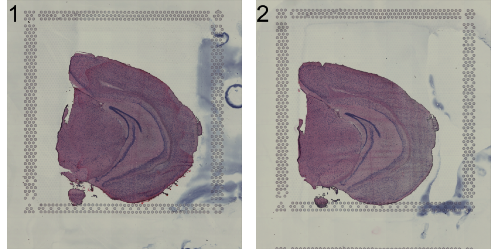
OBS: We have noted that some systems experience memory problems due to large size image information not being cleared when removing old objects. If this is the case, the user can set time.resolve = TRUE, which will add a small garbage collection step to avoid this issue.
NOTE: time.resolve is set to TRUE as default in the current version. This will imply that the process takes approximately 5 sec longer per sample.
The core of an ST experiment is the interplay between quantitative RNAseq data and qualitative image data. Working in R, the handling of image information and plotting of multiple samples can get a bit cumbersome, especially if the images are of higher resolution. Typically, we rarely find much use of plotting multiple samples together with the tissue images within this framework. Instead, the general tip is to perform the various plots using only the expression data, and after finding anything of interest that warrants further analysis - take out that sample and plot it individually together with the stained tissue image.
For example, we can visualize the number of RNA features and RNA counts on the ST array coordinates and quickly verify where we capture more material from the tissue.
# TODO: make sure that levels are set in facets
ST.FeaturePlot(object = se,
features = c("nFeature_RNA"),
cols = c("lightgray", "mistyrose", "red", "dark red", "black"),
ncol = 2)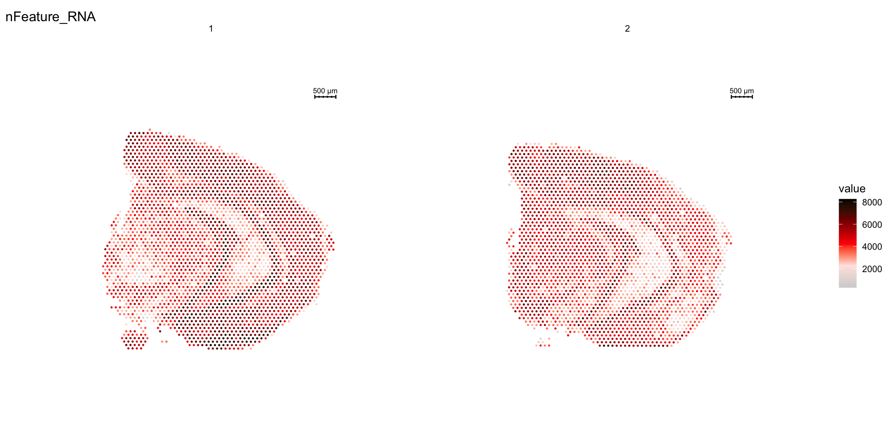
ST.FeaturePlot(object = se,
features = c("nCount_RNA"),
cols = c("lightgray", "mistyrose", "red", "dark red", "black"),
ncol = 2)
To overlay a spatial feature heatmaps on top of the HE image we use the FeatureOverlay() function. Handling large images gets clumsy so we recommend to work with down-scaled versions of the images that takes up less memory.
FeatureOverlay(se,
features = "Cck",
pt.size = 1.5,
cols = c("lightgray", "mistyrose", "red", "dark red", "black"),
type = "raw")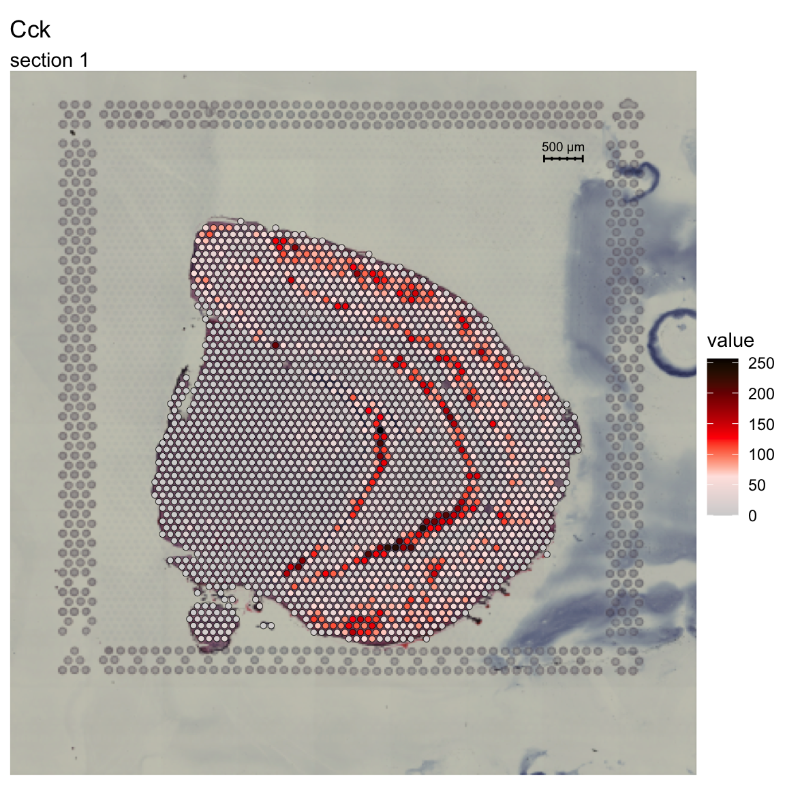
You can see that by default, the first sample was selected for the feature overlay. If you wish to visualize another sample you can specify the sample.index parameter. If you wish to plot several features side by side, you can just specify as many as you want. The layout of the Overlay plots are controlled by the ncols.samples and the ncols.features parameters. ncols.samples can be used to adjust how many columns should be drawn for the sections in your Seurat object while the ncols.features controls how many columns should be drawn for the selected features. Here we are drawing 4 features on 1 section so if we want to draw the features a layout of 2x2 we can simply set ncols.features = 2
FeatureOverlay(se,
features = c("Cck", "Calb2", "Dcn", "Nrgn"),
cols = c("lightgray", "mistyrose", "red", "dark red", "black"),
type = "raw",
ncols = 2)
If you want to highlight only the regions with high feature values, you can add some opacity to the spots using the add.alpha parameter. Setting add.alpha = TRUE will add opacity to the spots scaled by the feature values, meaning that spots with high values will be visible and spots with low values will be transparent.
FeatureOverlay(se,
features = c("Cck", "Calb2", "Dcn", "Nrgn"),
add.alpha = TRUE,
cols = c("lightgray", "mistyrose", "red", "dark red", "black"),
type = "raw",
ncols = 2)
Within the overlay area you also have a section number in the top left corner as well as a scale bar (showing the width of 500 microns) in the top right corner which can be disabled using the sample.label and show.sb options. Another thing we can do is to pass a custom theme (compatible with ggplot2 plots) if you wish to change the plot appearance.
Now we can for example disable the section number, scale bar, plot title and remove the legend from the plots.
customtheme <- theme(legend.position = "None", plot.title = element_blank())
FeatureOverlay(se,
features = c("Cck", "Calb2", "Dcn", "Nrgn"),
cols = c("lightgray", "mistyrose", "red", "dark red", "black"),
type = "raw",
ncols = 2,
sample.label = FALSE,
show.sb = FALSE) & customtheme 
Another feature that can be useful for visualization purposes is to mask the background of the HE images. The function MaskImages() can be used to remove the background currently works well for tissues with a clearly defined border. Since masking is a non trivial problem, it is possible that the masking will fail for certain tissue types. If this happens you can try to modify the parameters in MaskImages() or create your own masking function to see if you can obtain better results (see ?MaskImages for more details).
NOTE: the image procesing methods have been optimized for small images and if you have loaded images in higher resolution there is a greater risk that some steps will fail. If you still wish to use images with higher resolution there are instructions on how to do this in the Resolution section below.
se <- MaskImages(object = se)
There are 5 types of images which can be stored into the Seurat object; “raw”, “masked”, “masked.masks”, “processed” and “processed.masks”. “raw” represents the original HE images without any modifications. In the “masked” images, the background have been removed using a binary mask which is stored under the name “masked.masks”. “processed” images have been further modified by applying rigid transformations such as rotations and shifts and these images also have the corresponding “processed.masks”.
You can look at the HE images using the ImagePlot() function.The ImagePlot function will automatically label the samples from 1 to N where N is the total number of samples. If you are running the function within RStudio you can take advantage of the Viewer panel to explore the images. Setting method=“raster” and the plot function will use the default plotting device in R. You can also change the layout of the images by forcing a different number of columns by setting ncols.
# Plot HE images
ImagePlot(se, ncols = 2, method = "raster", type = "raw") # Raw imageImagePlot(se, ncols = 2, method = "raster", type = "masked") # Masked image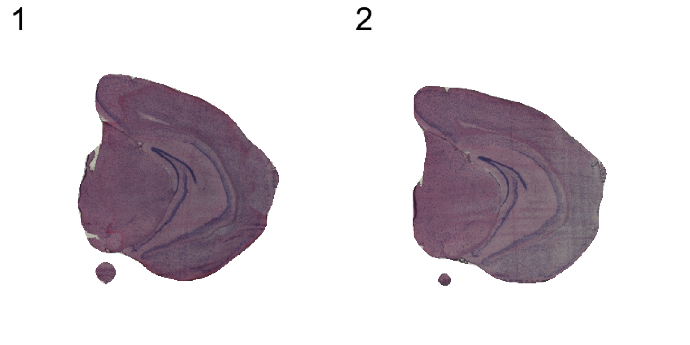
ImagePlot(se, ncols = 2, method = "raster", type = "masked.masks", darken = TRUE) # Mask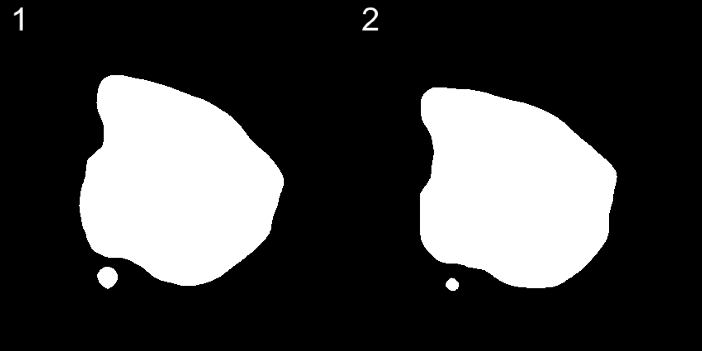
Individual transformations to images
If you follow along the test set in this vignette, you will notice that the samples are not quite aligned with respect to each other on the array. We have implemented three different methods to align or process images; AlignImages(), WarpImages() and ManualAlignImages().
Automatic alignment
The automatic alignment method (AlignImages()) first tries to detect the tissue edges from each image. By default, the first image (reference.index = 1) is used as a reference but you can specify any sample with the reference.indexoption. Then, for each image, a transformation matrix is learned that can be used to map coordinates to the reference image. This alignment method will sometimes fail and in that case you can align the images manually instead using the ManualAlignImages() function. This is typically required when; (1) the tissue is bigger than the image and therefore outside the frame, (2) the tissue has a symmetrical shape (for example if the tissue has a round shape, it will be difficult to find an optimal alignment using the tissue edges), (3) the masking has failed.
The actual transformation is done using the imwarp() function from the imager R package using a “backward” transformation strategy. This method makes sure that every pixel is painted using linear interpolation so the aligned images will experience some quality loss.
The automatic alignment should only be used on tissue sections with the same morphology, so to demonstrate this we’ll look at the “2k” array mouse brain data.
# Look at the HE images from the "2k" array mouse brain dataset
ImagePlot(se, method = "raster", type = "raw", ncols = 4)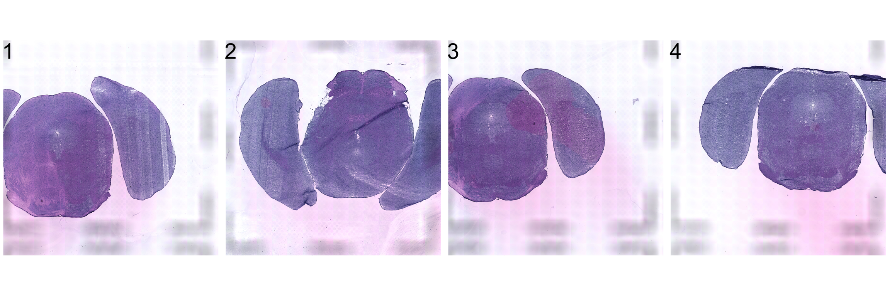
First we need to mask the images and then we can apply the automatic alignment method. As you can see, the automatic alignment method can apply rotations, translations and reflections to the images.
se <- se %>% MaskImages() %>% AlignImages()ImagePlot(se, method = "raster", type = "processed", ncols = 4)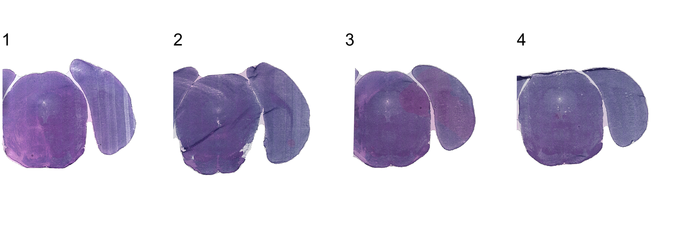
Manual rigid transformations
An alternative method is to apply rigid transformations to the images using the WarpImages() function. This function takes a list of transformations for the samples of your choice and converts the transformations into mapping functions which can be used to warp the images.
The available transformations are; “center.x”, “center.y”, “mirror.x”, “mirror.y” and “angle”
Remember that you need to mask the images before processing them!
transforms <- list("2" = list("angle" = 90))
se.rotate90 <- WarpImages(se, transforms)
ImagePlot(se.rotate90, method = "raster")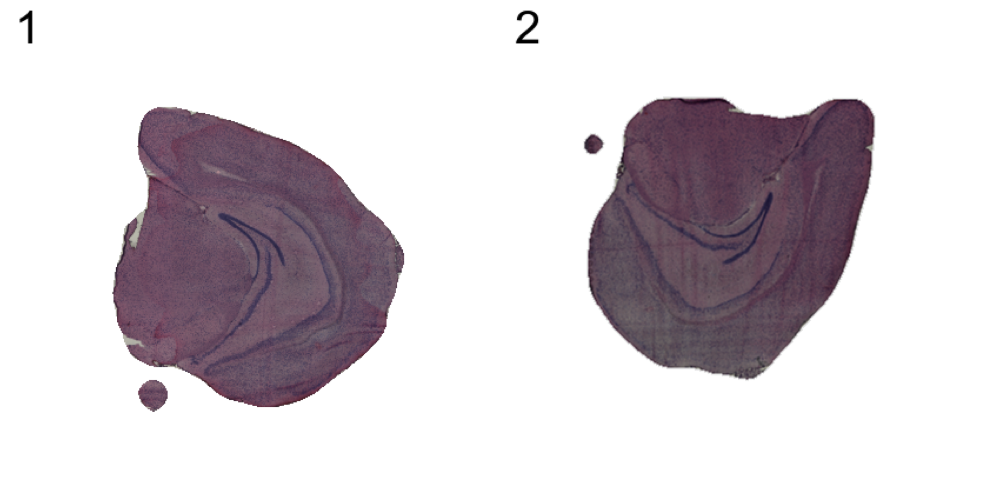
transforms <- list("2" = list("mirror.x" = T))
se.mirrorx <- WarpImages(se, transforms)
ImagePlot(se.mirrorx, method = "raster")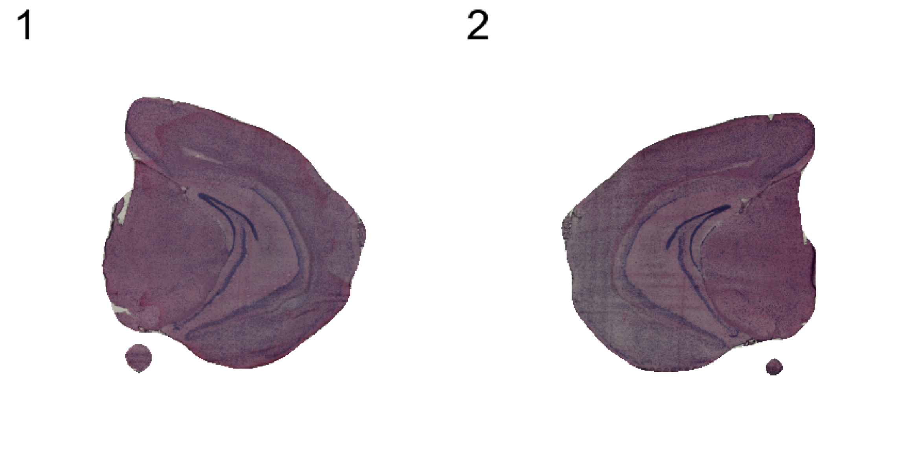
transforms <- list("2" = list("mirror.y" = T))
se.mirrory <- WarpImages(se, transforms)
ImagePlot(se.mirrory, method = "raster")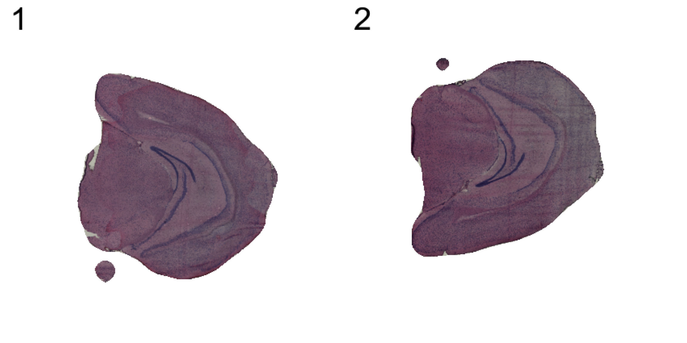
Any transformations applied to the images will also be applied to the coordinates used to map gene expression values onto the images. If you want to draw the plots on other images you can pass one of “raw”, “masked”, “processed” to the type option in the FeatureOverlay function.
heatmap.colors <- c("lightgray", "mistyrose", "red", "dark red", "black")
ST.FeaturePlot(se, features = "Cck", cols = heatmap.colors, ncol = 2)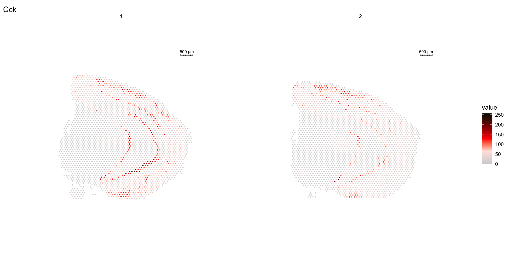
ST.FeaturePlot(se.rotate90, features = "Cck", cols = heatmap.colors, ncol = 2)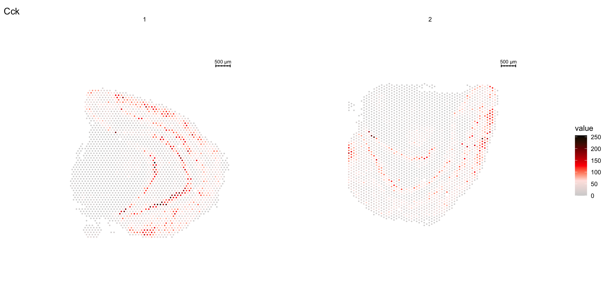
ST.FeaturePlot(se.mirrorx, features = "Cck", cols = heatmap.colors, ncol = 2)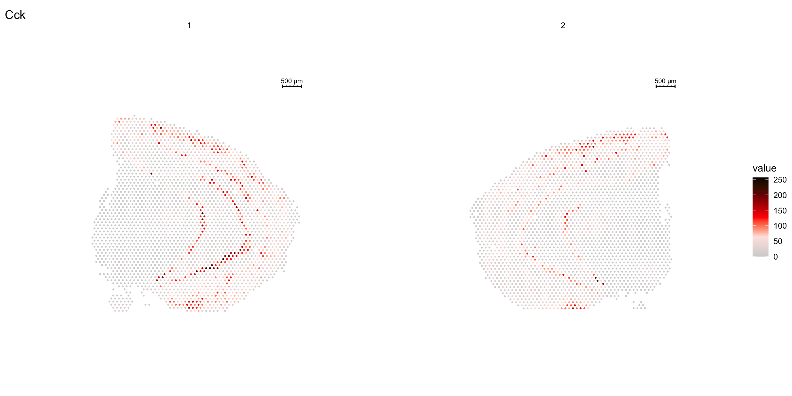
ST.FeaturePlot(se.mirrory, features = "Cck", cols = heatmap.colors, ncol = 2)
Visualize multiple samples
So far we have only plotted section 1 using the FeatureOverlay function. If you want to draw feature heatmaps on multiple section at the same time you can do this by specifing several sections in the sampleids option
FeatureOverlay(se, features = "Nrgn",
sampleids = 1:2,
cols = c("lightgray", "mistyrose", "red", "dark red", "black"),
ncols = 2)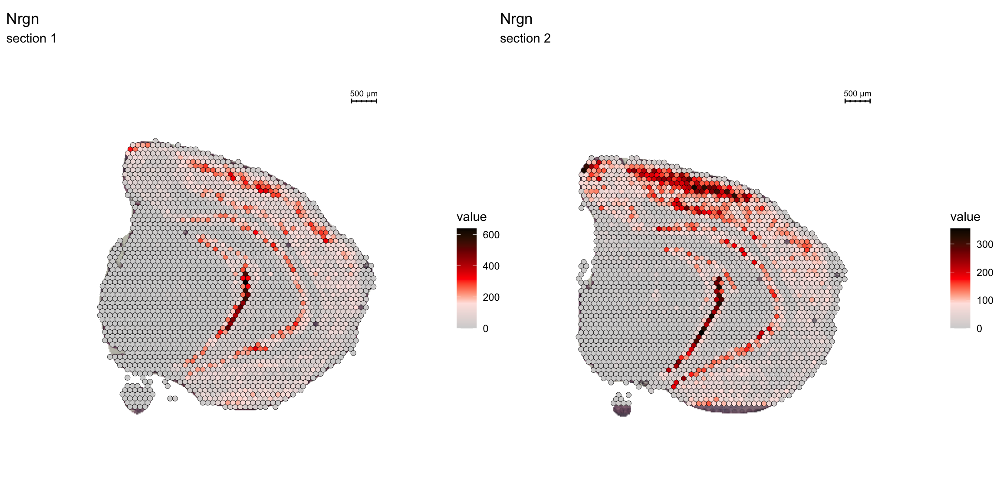
As mentioned before, we can change the type parameter in the FeatureOverlay() function to override the default use of processed images.
FeatureOverlay(object = se, features = c("Nrgn", "Cck"),
cols = c("lightgray", "mistyrose", "red", "dark red", "black"),
sampleids = 2,
type = "raw")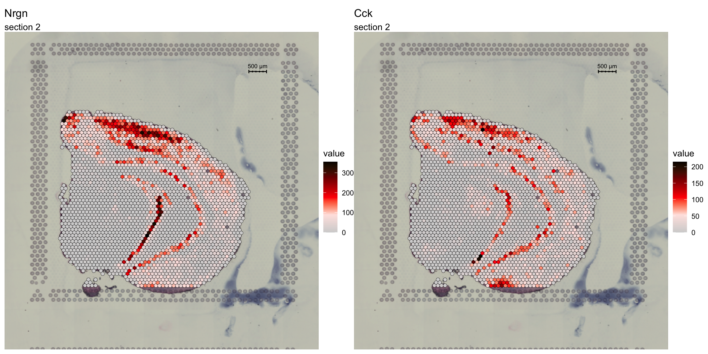
A work by Joseph Bergenstråhle and Ludvig Larsson
sessionInfo()R version 4.0.5 (2021-03-31)
Platform: x86_64-apple-darwin17.0 (64-bit)
Running under: macOS Mojave 10.14.6
Matrix products: default
BLAS: /Library/Frameworks/R.framework/Versions/4.0/Resources/lib/libRblas.dylib
LAPACK: /Library/Frameworks/R.framework/Versions/4.0/Resources/lib/libRlapack.dylib
locale:
[1] en_US.UTF-8/en_US.UTF-8/en_US.UTF-8/C/en_US.UTF-8/en_US.UTF-8
attached base packages:
[1] stats graphics grDevices utils datasets methods base
other attached packages:
[1] STutility_0.1.0 ggplot2_3.3.3 Seurat_3.1.5 workflowr_1.6.2
loaded via a namespace (and not attached):
[1] uuid_0.1-4 backports_1.1.6 systemfonts_0.2.1
[4] plyr_1.8.6 igraph_1.2.6 lazyeval_0.2.2
[7] sp_1.4-1 splines_4.0.5 crosstalk_1.1.1
[10] listenv_0.8.0 digest_0.6.27 foreach_1.5.0
[13] htmltools_0.5.1.1 viridis_0.5.1 magick_2.3
[16] tiff_0.1-5 gdata_2.18.0 fansi_0.4.2
[19] magrittr_2.0.1 cluster_2.1.1 doParallel_1.0.15
[22] ROCR_1.0-11 globals_0.14.0 gmodels_2.18.1
[25] jpeg_0.1-8.1 colorspace_2.0-0 blob_1.2.1
[28] ggrepel_0.9.1 xfun_0.13 dplyr_1.0.5
[31] crayon_1.4.1 jsonlite_1.7.2 zeallot_0.1.0
[34] survival_3.2-10 zoo_1.8-9 iterators_1.0.12
[37] ape_5.4-1 glue_1.4.2 gtable_0.3.0
[40] webshot_0.5.2 leiden_0.3.7 future.apply_1.7.0
[43] scales_1.1.1 DBI_1.1.0 miniUI_0.1.1.1
[46] Rcpp_1.0.6 viridisLite_0.3.0 xtable_1.8-4
[49] spData_0.3.5 units_0.6-6 reticulate_1.18
[52] spdep_1.1-3 rsvd_1.0.3 akima_0.6-2
[55] tsne_0.1-3 htmlwidgets_1.5.3 httr_1.4.2
[58] RColorBrewer_1.1-2 ellipsis_0.3.1 ica_1.0-2
[61] farver_2.1.0 pkgconfig_2.0.3 uwot_0.1.10
[64] deldir_0.1-25 utf8_1.2.1 labeling_0.4.2
[67] tidyselect_1.1.0 rlang_0.4.10 manipulateWidget_0.10.1
[70] reshape2_1.4.4 later_1.1.0.1 munsell_0.5.0
[73] tools_4.0.5 dbscan_1.1-5 generics_0.1.0
[76] ggridges_0.5.3 evaluate_0.14 stringr_1.4.0
[79] fastmap_1.0.1 yaml_2.2.1 knitr_1.28
[82] fs_1.5.0 fitdistrplus_1.1-3 rgl_0.100.54
[85] purrr_0.3.4 RANN_2.6.1 readbitmap_0.1.5
[88] pbapply_1.4-3 future_1.21.0 nlme_3.1-152
[91] mime_0.10 ggiraph_0.7.7 compiler_4.0.5
[94] plotly_4.9.3 png_0.1-7 e1071_1.7-3
[97] Morpho_2.8 tibble_3.1.0 stringi_1.5.3
[100] gdtools_0.2.2 lattice_0.20-41 Matrix_1.3-2
[103] classInt_0.4-3 shinyjs_1.1 vctrs_0.3.7
[106] pillar_1.5.1 LearnBayes_2.15.1 lifecycle_1.0.0
[109] lmtest_0.9-38 RcppAnnoy_0.0.18 data.table_1.14.0
[112] cowplot_1.1.1 irlba_2.3.3 Rvcg_0.19.1
[115] raster_3.1-5 httpuv_1.5.2 patchwork_1.1.1
[118] colorRamps_2.3 R6_2.5.0 imager_0.42.1
[121] promises_1.2.0.1 KernSmooth_2.23-18 gridExtra_2.3
[124] bmp_0.3 parallelly_1.24.0 codetools_0.2-18
[127] gtools_3.8.2 boot_1.3-27 MASS_7.3-53.1
[130] assertthat_0.2.1 rprojroot_1.3-2 withr_2.4.1
[133] sctransform_0.2.1 expm_0.999-4 parallel_4.0.5
[136] grid_4.0.5 tidyr_1.1.3 coda_0.19-3
[139] class_7.3-18 rmarkdown_2.1 Rtsne_0.15
[142] git2r_0.27.1 sf_0.9-7 shiny_1.4.0.2